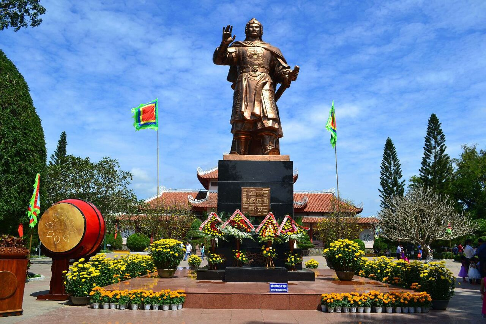

I. Thông tin cơ bản
- Tên tuổi: Tên khai sinh Hồ Thơm (胡𦹳), sau đổi thành Nguyễn Huệ (阮惠).
- quê gốc Nghệ An, di cư vào Bình Định. Thuộc Tây Sơn tam kiệt (Nguyễn Nhạc, Nguyễn Huệ, Nguyễn Lữ).
- Tước hiệu trước khi lên ngôi: Bắc Bình Vương. Lên ngôi hoàng đế năm 1788, niên hiệu Quang Trung (光中), miếu hiệu Thái Tổ, thụy Vũ Hoàng đế.
- Năm sinh - mất: Sinh năm 1753 tại Tây Sơn, Bình Định; mất đột ngột ngày 16/9/1792 (âm lịch 29/7 Nhâm Tý), thọ 39-40 tuổi (có thể do đột quỵ).

II. Thành tựu
- Thống nhất đất nước sau hơn 200 năm chia cắt (kết thúc Trịnh - Nguyễn phân tranh, lật đổ chúa Trịnh và chúa Nguyễn).
- Đánh bại ngoại xâm: Quân Xiêm La (Thái Lan) và 29 vạn quân Thanh (Trung Quốc).
- Bách chiến bách thắng: Từ năm 18 tuổi cầm quân, trải qua hàng chục trận lớn trong 20 năm, chưa từng thua trận.
- Làm vua chỉ 4 năm (1788-1792) nhưng thực hiện nhiều cải cách tiến bộ: Khuyến nông, giảm thuế, dùng chữ Nôm thay chữ Hán, khuyến học, xây quân đội hiện đại, ngoại giao khôn khéo.
- Cuộc đời: Xuất thân nông dân nghèo (anh hùng áo vải), học giỏi binh pháp từ nhỏ. Năm 1771 khởi nghĩa Tây Sơn chống áp bức. Từ tướng lĩnh trở thành hoàng đế, lãnh đạo nhân dân đánh bại nội ngoại xâm, xây dựng đất nước. Mất sớm khiến triều Tây Sơn suy vong, nhưng di sản bất diệt.
III. Trận đánh lịch sử
- Rạch Gầm - Xoài Mút(1785)
- Ngọc Hồi - Đống Đa(1789, mùng 5 Tết Kỳ Dậu
- Chiếm Gia Định(1777)
- Diệt chúa TRịnh(1786)
IV. Cách tôn vinh

- Thời xưa: Nhà Thanh công nhận ông là vua chính thống Việt Nam sau đại thắng 1789.
- Dân chúng tôn thờ như anh hùng cứu nước (lễ hội, đền thờ).
- Triều Nguyễn (Gia Long) bôi nhọ là "ngụy Tây Sơn" để chính danh, nhưng vẫn ghi nhận chiến thắng chống Thanh.
- Thời hiện đại: Được liệt vào 14 anh hùng dân tộc tiêu biểu Việt Nam.
- Tôn vinh rộng rãi: Bảo tàng Quang Trung (Bình Định), Đền thờ Đống Đa (Hà Nội), tượng đài khắp nơi (Huế, Sài Gòn, Bình Định).
- Lễ hội Tây Sơn, Đống Đa hàng năm (mùng 5 Tết).
- Sách giáo khoa, phim ảnh, tên đường phố (đường Nguyễn Huệ TP.HCM), tiền giấy cũ.
- Ông là biểu tượng quật cường, yêu nước, được nghiên cứu và ca ngợi như thiên tài quân sự - chính trị.